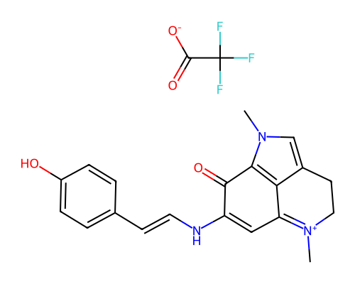
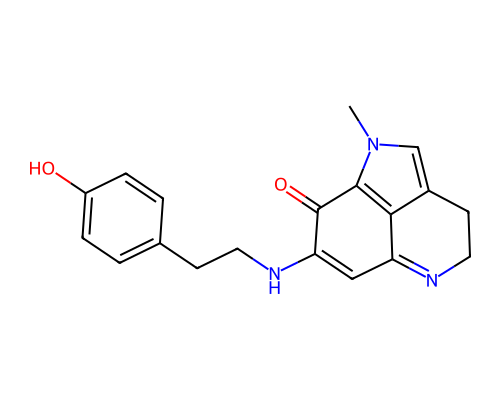

Zyzzya cf. fuliginosa
- Collection location
- Coast of Vanuatu Islands
- Ocean / sea
- Pacific Ocean / Vanuatu Islands
- Substrate
- sponge
DOI 10.1021/np010053+ ↗ · PubMed 11678667 ↗
p1354 coisolated compounds2–5; p1355 Biological Material
Recorded organism, strain, collection context and compound-linked source evidence.
A source profile groups recorded name variants. Primary-source review, strain identification and sequence verification are separate evidence decisions.
Compound activities are not automatically attributable to this strain, sample or source publication.
| Structure | Compound | Formula | MW (g/mol) | Reported source depth | Classification | Activity records | Admitted evidence rows |
|---|---|---|---|---|---|---|---|
 Structure image unavailable | MAKALUVAMINE GConnections → | C22H20F3N3O4 | 结构/身份暂缓，未计算 | Alkaloid | 7 | 7 | |
 Structure image unavailable | MAKALUVAMINE KConnections → | C19H19N3O2 | 321.38 g/mol | Alkaloid | 4 | 4 | |
 Structure image unavailable Structure image unavailable | MAKALUVAMINE PConnections → | C20H22ClN3O2 | 结构/身份暂缓，未计算 | Alkaloid | 3 | 3 |
Up to two results per compound are shown. Open the compound record for all results, conditions and restrictions.
Shared cited references are prioritized where available. A shared reference does not establish a strain-specific assay or the same experimental sample.
| Product | Recorded results | Result evidence |
|---|---|---|
| MAKALUVAMINE G | HEK293 IC50 = 2000 nM Evidence detailsPrimary result checkedOther cited reference for this compound Human and mouse liver (author-predicted extraction) Predicted hepatic extraction ratio EH：human liver Predicted hepatic extraction ratio EH = 0.92 dimensionless；mouse liver Predicted hepatic extraction ratio EH = 0.91 dimensionless Evidence detailsPrimary result checkedOther cited reference for this compound | |
| MAKALUVAMINE K | HEK293 IC50 = 1100 nM Evidence detailsPrimary result checkedOther cited reference for this compound Plasmodium falciparum 3D7 (chloroquine-sensitive) IC50 = 396 nM Evidence detailsPrimary result checkedOther cited reference for this compound | |
| MAKALUVAMINE P | KB tumor cells Growth inhibition · 64% inhibition at 3.2 μg/mL; not IC50 Evidence detailsPrimary result checkedShared cited reference; experimental attribution unconfirmed Xanthine oxidase IC50 = 16.5 μM Evidence detailsPrimary result checkedShared cited reference; experimental attribution unconfirmed |
Repeated source records are grouped with their associated compounds.
Associated compounds: MAKALUVAMINE G, MAKALUVAMINE K
Associated compounds: MAKALUVAMINE P
[ { "evidence": { "PMID": "11678667", "DOI": "10.1021/np010053+", "file": "papers/11678667/main.pdf", "locator": "p1354 coisolated compounds2–5; p1355 Biological Material", "sha256": "b5048f5aa93f1ce6934d63ca355efb8e875cf005a8e6f3a96b8b809ea772594d" }, "note": "No SMILES/InChIKey changed. Prior primary/public support preserved; identity/name mapping does not certify all atoms or stereocenters." } ]
[{"store": "formal", "field": "acceptance_property_audit.blocked_reasons", "value": ["multiple_fragments_no_salt_or_form_normalization_authorized"]}, {"store": "working", "field": "acceptance_property_audit.blocked_reasons", "value": ["multiple_fragments_no_salt_or_form_normalization_authorized"]}]
[ { "evidence": { "PMID": "11678667", "DOI": "10.1021/np010053+", "file": "papers/11678667/main.pdf", "locator": "p1354 coisolated compounds2–5; p1355 Biological Material", "sha256": "b5048f5aa93f1ce6934d63ca355efb8e875cf005a8e6f3a96b8b809ea772594d" }, "note": "No SMILES/InChIKey changed. Prior primary/public support preserved; identity/name mapping does not certify all atoms or stereocenters." } ]
[{"store": "formal", "field": "acceptance_property_audit.blocked_reasons", "value": ["multiple_fragments_no_salt_or_form_normalization_authorized"]}, {"store": "working", "field": "acceptance_property_audit.blocked_reasons", "value": ["multiple_fragments_no_salt_or_form_normalization_authorized"]}]